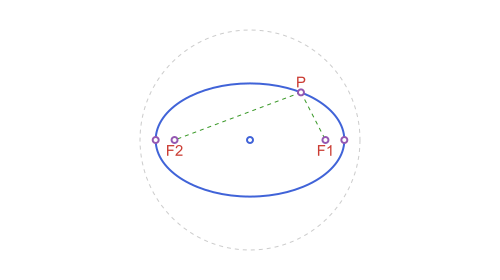
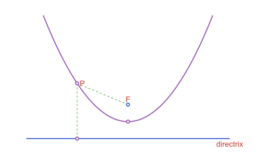
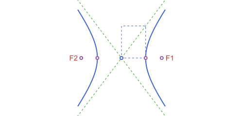

Conics: Ellipse, Parabola & Hyperbola
Three separate types (APEllipse2, APParabola2 and APHyperbola2) each aligned with a coordinate axis of its own (center/angle for the first two, focus/directrix for the parabola), plus a fifth constructor, conic_through_points, that fits an ellipse or hyperbola through five arbitrary points.
All three conic types share the same shape of API, since they share the same underlying pattern (a curve defined by an equation in its own local frame, plus a point/line duality): point_on_*, is_on_*, intersection with an APLine, polar_line, tangent_points and tangent_lines all exist for each of the three, with the same meaning throughout. That shared behavior is described once, in Points, tangents and duality, rather than three times.
Ellipse
using Apollonius
e = APEllipse2(APPoint(0.0, 0.0), 5.0, 3.0) # center, semi-axis a, semi-axis bAPEllipse2(center=[0.0, 0.0], a=5.0, b=3.0, angle=0.0)APEllipse2(center, a, b, angle=0.0) places semi-axis a along angle (radians from the x-axis) and semi-axis b perpendicular to it; a and b don't need to be ordered; either can be the longer one. There is also the classical bifocal constructor:
APEllipse2(APPoint(-4.0, 0.0), APPoint(4.0, 0.0), 5.0) # foci + semi-major axis aAPEllipse2(center=[0.0, 0.0], a=5.0, b=3.0, angle=0.0)which throws an ArgumentError if a isn't greater than half the distance between the foci (otherwise no real ellipse has that focal distance and semi-major axis). A third form, APEllipse2(f1, f2, p), builds the ellipse through a known point p instead of a known a, computing a from the bifocal sum (|pf1| + |pf2|)/2 first.
area(e) # π·a·b
perimeter(e) # Ramanujan's 2nd approximation (exact when a == b)
foci(e) # the two focus points, as a 2-tuple
vertices(e) # the two endpoints of the major axis, as a 2-tuple([5.0, 0.0], [-5.0, 0.0])is_on_ellipse(APPoint(5.0, 0.0), e) # true: exactly at the end of the major axis
is_on_ellipse(APPoint(1.0, 1.0), e) # false: strictly insidefalseorthoptic is the director circle: the locus of points from which the two tangent lines to e are perpendicular. For an ellipse it's always a real circle, of radius sqrt(a² + b²), centered at e.center.
orthoptic(e) # APCircle2(center, sqrt(5^2+3^2)) ≈ APCircle2(center, 5.83)APCircle2([0.0, 0.0], 5.830951894845301)
Parabola
focus = APPoint(0.0, 1.0)
directrix = APLine(APPoint(-5.0, -1.0), APPoint(5.0, -1.0))
par = APParabola2(focus, directrix)APParabola2(focus=[0.0, 1.0], directrix=APLine([-5.0, -1.0] -> [5.0, -1.0]))vertex(par) # midpoint of focus and its foot on the directrix
vertices(par) # (vertex(par),): a 1-tuple, so vertices() works uniformly across every conic
focal_parameter(par) # distance(focus, directrix), often called p2.0APParabola2(vertex, focus) is the point-based alternative, the same idea as APCircle2(center, through) or the bifocal APEllipse2/APHyperbola2 constructors: vertex and focus alone pin down the axis, the focal parameter, and so the directrix too.
APParabola2(vertex(par), focus) ≈ partruepoint_on parametrizes by the signed distance s from the axis (so it's the local y-coordinate in the frame where the parabola reads y² = 2·p·x, with s = 0 at the vertex):
point_on(par, 2.0)[-2.0, 1.0]is_on_parabola(point_on(par, 2.0), par) # true, by constructiontrueThe parabola's own orthoptic (director curve) turns out to be exactly its directrix, a fact special to the parabola (the ellipse's and hyperbola's orthoptics are circles, not lines):
orthoptic(par) == par.directrixtrue
Hyperbola
h = APHyperbola2(APPoint(0.0, 0.0), 3.0, 4.0) # center, transverse a, conjugate bAPHyperbola2(center=[0.0, 0.0], a=3.0, b=4.0, angle=0.0)APHyperbola2(center, a, b, angle=0.0) reads (x/a)² - (y/b)² = 1 in the rotated local frame: a is the semi-transverse axis (along angle, the one that actually meets the curve) and b the semi-conjugate axis (which doesn't). The bifocal constructor mirrors the ellipse's:
APHyperbola2(APPoint(-5.0, 0.0), APPoint(5.0, 0.0), 3.0) # foci + semi-transverse axis aAPHyperbola2(center=[0.0, 0.0], a=3.0, b=4.0, angle=0.0)throwing instead when a isn't less than half the focal distance (the opposite inequality from the ellipse, since here c > a).
foci(h) # the two foci, at distance sqrt(a²+b²) from the center
asymptotes(h) # the two asymptote lines, through the center
vertices(h) # the two points where each branch meets the transverse axis, at distance a from the center([3.0, 0.0], [-3.0, 0.0])
orthoptic (the director circle) exists for a hyperbola only when a > b, with radius sqrt(a² - b²); otherwise there's no point in the plane from which both tangents can be perpendicular, and it throws an ArgumentError:
orthoptic(APHyperbola2(APPoint(0.0, 0.0), 5.0, 3.0)) # a > b: APCircle2 of radius sqrt(25-9) = 4APCircle2([0.0, 0.0], 4.0)point_on parametrizes one branch at a time (branch=1, the default, or branch=-1 for the other) using the hyperbolic functions: x = branch·a·cosh(t), y = b·sinh(t).
point_on(h, 0.5) # on the branch nearer +x
point_on(h, 0.5; branch=-1) # the mirrored point on the other branch[-3.382877895619142, 2.0843812219749895]is_on_hyperbola(point_on(h, 0.5), h) # true, on either branchtruep in h (via Base.in) is the natural analogue of "inside" for a curve that doesn't bound a single finite region: it's true when p is on h itself or beyond either branch ((x/a)² - (y/b)² >= 1 in the local frame), i.e. on the same side as the curve, rather than in the "waist" between the two branches.